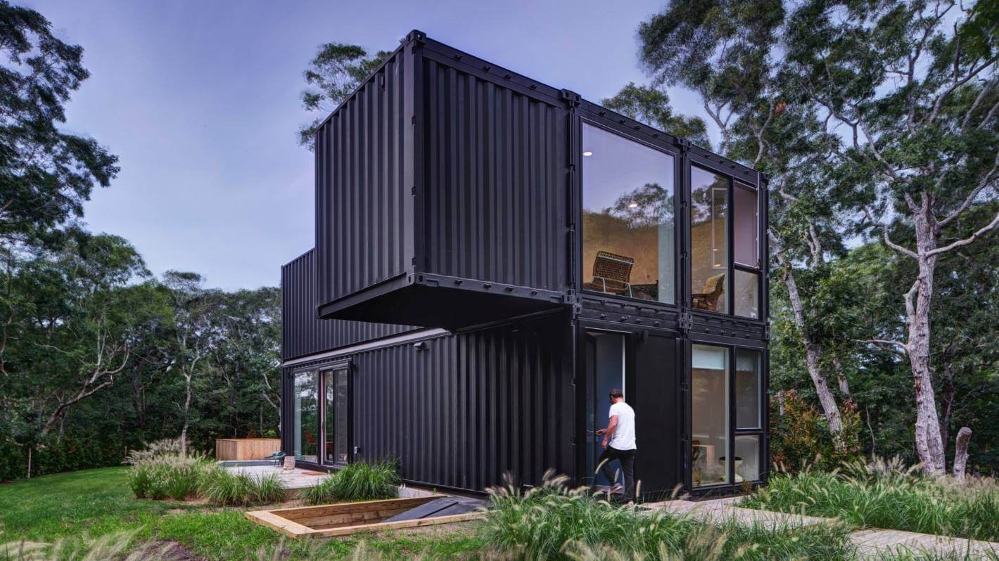

<!-- ======= Blog Single Section ======= -->
<section id="blog" class="blog">
  <div class="container" data-aos="fade-up">
    <div class="row">
      <div class="col-lg-8 entries">
        <article class="entry entry-single">
          <div class="entry-img">
            
          </div>
          <h2 class="entry-title">Czy da się mieszkać w kontenerach?</h2>
          <div class="entry-meta">
            <ul>
              <li class="d-flex align-items-center">
                <i class="bi bi-clock"></i>
                <a href="blog-single.html"
                  ><time datetime="2020-01-01">Jan 1, 2020</time></a
                >
              </li>
            </ul>
          </div>
          <div class="entry-content">
            <p>
              Od kilku lat zauważalny jest nowy trend w architekturze – Polacy
              powoli odchodzą od klasycznego budownictwa i stawiają na proste,
              ekologiczne, a przy tym niebanalne rozwiązania. Mieszkanie w
              kontenerze? Choć dla wielu osób wciąż brzmi to abstrakcyjnie,
              konstrukcje te mają coraz większe grono zwolenników. I wbrew
              ogólnemu wyobrażeniu w niczym nie przypominają one popularnych
              baraków robotniczych. Wręcz przeciwnie – pozwolą w krótkim czasie
              i bez dużych nakładów finansowych stworzyć wyjątkowe, stylowe
              lokum.
            </p>
            <p>
              Kontenery przestają być kojarzone z placem budowy czy też
              obiektami letniskowymi. Mogą być z powodzeniem wykorzystywane jako
              całoroczne domki mieszkalne – oczywiście po uprzednim odpowiednim
              przygotowaniu. Są one wyposażone zarówno w kuchnię, jak i
              łazienkę. Zapewniają wszystko, co jest potrzebne do codziennego
              funkcjonowania, tzn. instalacje elektryczne oraz
              wodno-kanalizacyjne, a także oświetlenie. Panują tu dokładnie
              takie same, a czasem nawet i lepsze warunki niż w tradycyjnych
              domach czy mieszkaniach. Nie muszą się Państwo także obawiać o
              temperaturę wewnątrz – dzięki ociepleniu ścian, a także ogrzewaniu
              elektrycznemu we wnętrzu panują odpowiednie warunki nawet podczas
              mroźnej zimy. Izolacja termiczna zabezpieczy także przed
              nadmiernym nagrzewaniem wnętrza podczas upalnych dni letnich.
            </p>
            <p>
              Wykończenie płytami gipsowo-kartonowymi lub fermacell, które można
              następnie pomalować na dowolny kolor. Można także zrezygnować
              częściowo ze ścian i zamiast nich wstawić duże elementy
              przeszklone, które nie tylko wpłyną na estetykę konstrukcji, ale i
              ułatwią dostęp naturalnego światła i promieni słonecznych. Pomogą
              także w optycznym powiększeniu przestrzeni, co z pewnością docenią
              osoby, które obawiają się małych, zamkniętych przestrzeni. Wnętrza
              można dowolnie urządzić przy wykorzystaniu drewna, szkła czy
              stali, co pozwoli na aranżację według indywidualnych preferencji.
              Dzięki odpowiedniemu projektowi we wnętrzu w ogóle nie będzie
              widać, że domek powstał z kontenera!
            </p>
            <p>
              Nie ma też obaw, że dom z kontenera będzie straszyć z zewnątrz –
              dzięki odpowiedniemu wykończeniu może przemienić się z surowej
              konstrukcji zarówno w nowoczesny, jak i przytulny domek. Co
              więcej, domki te można w każdej chwili powiększać o dodatkowe
              pomieszczenia, dostawiając kolejne moduły. W ten sposób można
              stworzyć wystarczającą przestrzeń mieszkalną dla większej liczby
              osób, co nie byłoby możliwe w przypadku kawalerki czy też ciasnego
              mieszkania 2-pokojowego.
            </p>
            <h3>Kwestie formalne</h3>
            <p>
              Postawienie tradycyjnego domu związane jest z szeregiem wymogów
              stawianych między innymi przez prawo budowlane. W przypadku
              kontenerów mieszkalnych formalności nie są aż tak czasochłonne –
              postawienie kontenera nie wymaga bowiem aż tylu zezwoleń (czasem
              wystarczy jedynie zgłoszenie do odpowiedniej jednostki w lokalnym
              urzędzie). Należy jednak pamiętać, że pozwolenie na budowę od
              władz lokalnych będzie wymagane w sytuacji, gdy kontener będzie
              użytkowany w danym miejscu przez okres powyżej 180 dni.
            </p>
          </div>

          <div class="entry-footer">
            <ul class="tags">
              <li><a href="#">Business</a></li>
              <li><a href="#">Creative</a></li>
              <li><a href="#">Tips</a></li>
              <li><a href="#">Marketing</a></li>
            </ul>
          </div>
        </article>
      </div>
      <div class="col-lg-4">
        <app-sidebar></app-sidebar>
      </div>
    </div>
  </div>
</section>
